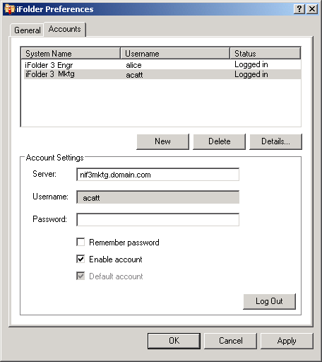

Configuration d'un compte iFolder
Vous devez configurer au moins un compte iFolder pour pouvoir créer ou partager des dossiers iFolder sur votre système. Vous ne pouvez créer qu'un compte sur chaque serveur ou ordinateur hôte donné, mais vous pouvez posséder plusieurs comptes.
Un utilisateur disposant d'un login local et d'un compte d'utilisateur différents peut se loguer au même ordinateur à un moment différent et utiliser iFolder pour créer son propre jeu de dossiers iFolder sous cette identité. iFolder ne synchronise que les dossiers iFolder appartenant à l'utilisateur actif.
-
Vous pouvez utiliser l'une des méthodes suivantes pour configurer votre compte :
- Lorsque vous lancez iFolder pour la première fois après l'avoir installé, il vous invite à configurer un compte iFolder. Cliquez sur Oui pour accéder directement à l'onglet Comptes des Préférences iFolder.
- Cliquez avec le bouton droit de la souris sur l'icône iFolder
 dans la zone Notification, puis sélectionnez Comptes pour ouvrir la boîte de dialogue Préférences iFolder dans l'onglet Comptes.
dans la zone Notification, puis sélectionnez Comptes pour ouvrir la boîte de dialogue Préférences iFolder dans l'onglet Comptes.
-
Cliquez sur Nouveau pour accéder à la zone Paramètres de compte.
-
Spécifiez les valeurs suivantes :
Paramètre Description Serveur
Nom DNS ou adresse IP du serveur d'entreprise iFolder sur lequel se trouve votre compte. Par exemple : svr21.exemple.com ou 192.168.1.1.
Nom d'utilisateur
Identité de l'utilisateur pour ce compte. Votre administrateur iFolder décide si le format que vous devez utiliser correspond à votre adresse de messagerie ou à votre ID d'utilisateur de réseau (nom commun LDAP).
Par exemple, si votre nom est Jean Deschamp, votre ID d'utilisateur jdeschamp et votre adresse de messagerie jean.deschamp@exemple.com, votre administrateur configure un paramètre pour le serveur qui détermine lequel des deux formats accepter dans le champ Nom d'utilisateur à des fins d'authentification.
Mot de passe
Mot de passe correspondant à votre nom d'utilisateur.
Mémoriser le mot de passe
Sélectionnez cette option pour vous loguer automatiquement à ce compte iFolder lorsque vous vous loguez à votre ordinateur. Pour plus d'informations, reportez-vous à la section Connexion à un compte iFolder.
Si votre mot de passe de réseau change, l'authentification automatique échoue la prochaine fois que iFolder essaie de vous loguer au compte iFolder. iFolder vous invite à vous loguer avec votre nouveau mot de passe et vous permet de le spécifier et de l'enregistrer.
Activer le compte
Sélectionnez cette option pour autoriser la synchronisation en arrière-plan des invitations iFolder, de la liste des utilisateurs et des dossiers iFolder de ce compte.
Compte par défaut
Sélectionnez cette option pour que ce compte soit sélectionné par défaut dans la liste déroulante des comptes lorsque vous créez des dossiers iFolder.
 -
Cliquez sur OK ou sur Loguer.
Si un certificat vous est soumis, vérifiez-le et cliquez sur OK pour l'accepter. Le compte apparaît dans la liste des comptes avec l'état Logué. iFolder commence à synchroniser les dossiers iFolder existants, les notifications iFolder et la liste des utilisateurs de ce compte.
-
Cliquez sur OK pour fermer la boîte de dialogue Préférences iFolder.
-
Configurez des dossiers iFolder pour ce compte en faisant appel à l'une de ces méthodes :
- Si le compte contient des dossiers iFolder, un message de notification iFolder apparaît. Cliquez sur ce message pour ouvrir la boîte de dialogue des dossiers iFolder. Passez à la section Configuration d'un dossier iFolder disponible.
- Si le compte ne contient pas de dossier iFolder ou si vous voulez commencer immédiatement à ajouter des dossiers iFolder, cliquez avec le bouton droit sur l'icône iFolder et sélectionnez Dossiers iFolder pour ouvrir la fenêtre des dossiers iFolder. Passez à la section Création d'un dossier iFolder.